| 陆军科技 | 海军科技 | 空军科技 | 电子与工业 |
|---|---|---|---|
无
|
|
没有
|
「无」 |
| 陆军学说 | 海军学说 | 空军学说 |
|---|---|---|
|
「无」 |
「无」 |
「无」 |
原页面：Romania
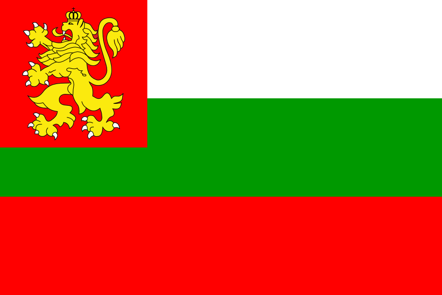 罗马尼亚 is middle power located in the Eastern Europe with a population of 18.07 M. Its regional situation is relatively secure:
罗马尼亚 is middle power located in the Eastern Europe with a population of 18.07 M. Its regional situation is relatively secure:  匈牙利 is disarmed,
匈牙利 is disarmed,  南斯拉夫 faces significant internal instability, and
南斯拉夫 faces significant internal instability, and  苏联 will soon undergo major purges of its military leadership,
苏联 will soon undergo major purges of its military leadership,  捷克斯洛伐克 is preoccupied with its own issues, and
捷克斯洛伐克 is preoccupied with its own issues, and  波兰 maintains friendly relations but is expected to be invaded by
波兰 maintains friendly relations but is expected to be invaded by  德国 in the near future.
德国 in the near future.
Although Romania starts out as a constitutional monarchy similar to  英国, the "Institute Royal Dictatorship" path allows it to turn into a de facto absolute monarchy. Historically, it happened in 1938, however, the player can institute it as soon as 1936. Further down the road, Romania can change its ideology yet again based on what kind of government King Carol II decides to install: a loyalist government leading to greater support for the king and stronger Sentinels of the Motherland paramilitary units, a communist cabinet leading to the establishment of Securitate, a fascist government leading to the installment of the Iron Guard or the restoration of democracy under a pro-Allied government. The communist and fascist paths can end with the forced abdication of King Carol II and then the King Michael's Coup leading to the restoration of democracy as it happened historically. Because of this, the players can easily switch between what ideology they deem fit for the moment and allows Romania to have a truly flexible foreign policy.
英国, the "Institute Royal Dictatorship" path allows it to turn into a de facto absolute monarchy. Historically, it happened in 1938, however, the player can institute it as soon as 1936. Further down the road, Romania can change its ideology yet again based on what kind of government King Carol II decides to install: a loyalist government leading to greater support for the king and stronger Sentinels of the Motherland paramilitary units, a communist cabinet leading to the establishment of Securitate, a fascist government leading to the installment of the Iron Guard or the restoration of democracy under a pro-Allied government. The communist and fascist paths can end with the forced abdication of King Carol II and then the King Michael's Coup leading to the restoration of democracy as it happened historically. Because of this, the players can easily switch between what ideology they deem fit for the moment and allows Romania to have a truly flexible foreign policy.
Despite its start as the strongest nation in the Balkans, Romania is surrounded by existential threats from the west and east alike. Both the  苏联和
苏联和 德国 will soon demand territories from Romania. To meet these threats, Romania has many options available, and its main choices are joining with the
德国 will soon demand territories from Romania. To meet these threats, Romania has many options available, and its main choices are joining with the  苏联,
苏联,  德国,and
德国,and  英国, and/or becoming a major power through the "Balkan Dominance" path or forming the "Cordon Sanitaire" faction with
英国, and/or becoming a major power through the "Balkan Dominance" path or forming the "Cordon Sanitaire" faction with  捷克斯洛伐克和
捷克斯洛伐克和 波兰.
波兰.
Due to its web of alliances formed in the interwar years: Little Entente, Polish-Romanian Alliance and Balkan Pact; depending on the actions of its neighbours, Romania can alternatively join the Entente if  法国 follows the "Confirm Eastern Commitments" path, the Czech Entente should
法国 follows the "Confirm Eastern Commitments" path, the Czech Entente should  捷克斯洛伐克 follow the "An Entente of Our Own" path or the Balkan Entete should
捷克斯洛伐克 follow the "An Entente of Our Own" path or the Balkan Entete should  土耳其 follow the "Continue to Prioritize Balkan Integrity" path.
土耳其 follow the "Continue to Prioritize Balkan Integrity" path.
Romania was a member of the victorious Entente when World War I ended in 1918. In exchange for promises of significant territorial expansion, Romania sided with  法国 and the
法国 and the  英国 in 1916. With the war's end the pre-eminent powers (
英国 in 1916. With the war's end the pre-eminent powers ( 美国,
美国,  法国和
法国和 英国) largely broke with their promises to lesser allies. However, Romania received a significant part of the promised territories using claims of historic rights and self-determination: Transylvania, Bukovina and two-thirds of Banat. Regions who despite being part of Austria-Hungary had a Romanian majority. Bessarabia who previously declared independence from the Russian Empire in 1917 and union with Romania in 1918 would make Romania the country with the most territorial gains of World War I relative to its size, more than double the territory, although 71.9% of the population was Romanian as the acquired territories already had a Romanian majority, but also significant minorities.
英国) largely broke with their promises to lesser allies. However, Romania received a significant part of the promised territories using claims of historic rights and self-determination: Transylvania, Bukovina and two-thirds of Banat. Regions who despite being part of Austria-Hungary had a Romanian majority. Bessarabia who previously declared independence from the Russian Empire in 1917 and union with Romania in 1918 would make Romania the country with the most territorial gains of World War I relative to its size, more than double the territory, although 71.9% of the population was Romanian as the acquired territories already had a Romanian majority, but also significant minorities.
To preserve this territory, Romania would become part of the Little Entente with  南斯拉夫和
南斯拉夫和 捷克斯洛伐克 in 1920 and form a separate alliance with
捷克斯洛伐克 in 1920 and form a separate alliance with  波兰 who refused to become part of the Little Entente due to territorial conflict with
波兰 who refused to become part of the Little Entente due to territorial conflict with  捷克斯洛伐克. By 1936 it had a population of 19,319,000 people being the 14th most populated country on the planet behind Brasil, Poland and the numerous empires of the era.
捷克斯洛伐克. By 1936 it had a population of 19,319,000 people being the 14th most populated country on the planet behind Brasil, Poland and the numerous empires of the era.
In April 1939, following 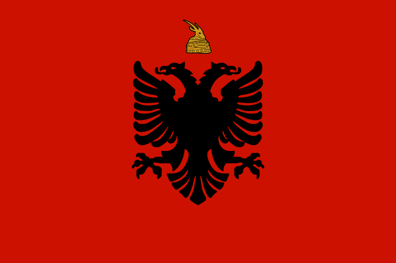 意大利's invasion of
意大利's invasion of  法国 and the
法国 and the  英国. When
英国. When  德国 invaded
德国 invaded  波兰, they decided not to activate their alliance with
波兰, they decided not to activate their alliance with  罗马尼亚 in order to use the neutral state on their borders to ship in Allied troops and supplies. However the Allies would not provide troops and supplies. Eventually the Polish army brigades and government evacuated through
罗马尼亚 in order to use the neutral state on their borders to ship in Allied troops and supplies. However the Allies would not provide troops and supplies. Eventually the Polish army brigades and government evacuated through  罗马尼亚 to
罗马尼亚 to  法国 and thence to
法国 and thence to  英国.
英国.
Following the fall of  法国 in June 1940, Romania had to come to terms with German supremacy on the continent. In July 1940 the
法国 in June 1940, Romania had to come to terms with German supremacy on the continent. In July 1940 the  苏联 demanded that Romania cede northern Bukovina and Bessarabia, Romania accepted. In August 1940
苏联 demanded that Romania cede northern Bukovina and Bessarabia, Romania accepted. In August 1940  德国 demanded that Romania cede northern Transylvania to
德国 demanded that Romania cede northern Transylvania to  匈牙利 and in September southern Dobruja to 保加利亚, Romania accepted again. One-third of Romania's 1939 area was amputated in 1940 and with it Romania's population shrank from 19.9 million to 13.3 million, half of the lost population being ethnically Romanian.
匈牙利 and in September southern Dobruja to 保加利亚, Romania accepted again. One-third of Romania's 1939 area was amputated in 1940 and with it Romania's population shrank from 19.9 million to 13.3 million, half of the lost population being ethnically Romanian.
In return for the territorial losses, King Carol II gained Hitler's guarantee but it also caused the popularity of the government to plummet, further reinforcing the fascist and military factions who eventually staged a coup that turned  罗马尼亚 into a fascist dictatorship under Marshal Ion Antonescu and forced King Carol II to abdicate. The new regime firmly set the country towards the Axis, joining the Axis in November 1940 and entering the war in June 1941 against the
罗马尼亚 into a fascist dictatorship under Marshal Ion Antonescu and forced King Carol II to abdicate. The new regime firmly set the country towards the Axis, joining the Axis in November 1940 and entering the war in June 1941 against the  苏联 under the pretext of recovering northern Bukovina and Bessarabia. During the invasion, Hitler offered to Marshal Ion Antonescu all the territories between Dniester and Dnieper south of Kiev, but Marshal Ion Antonescu refused fearing that this will be viewed as a compensation for the loss of northern Transylvania that Ion Antonescu still hoped to gain back via a second
苏联 under the pretext of recovering northern Bukovina and Bessarabia. During the invasion, Hitler offered to Marshal Ion Antonescu all the territories between Dniester and Dnieper south of Kiev, but Marshal Ion Antonescu refused fearing that this will be viewed as a compensation for the loss of northern Transylvania that Ion Antonescu still hoped to gain back via a second  德国 arbitration, and so it only took the territory between the Dniester and the Bug that will be known as Transnistria.
德国 arbitration, and so it only took the territory between the Dniester and the Bug that will be known as Transnistria.
The contribution of  罗马尼亚 was significant, not only for oil it provided for
罗马尼亚 was significant, not only for oil it provided for  德国 but also because according to Mark Axworthy in "Third Axis, Fourth Ally"
德国 but also because according to Mark Axworthy in "Third Axis, Fourth Ally"  罗马尼亚 was the 4th strongest Axis power after Germany, Japan and Italy. And on the Eastern Front specifically, the 2nd largest army with over 600.000 troops during the launch of Operation Barbarossa and 1.200.000 at its peak in 1942, more than the combined troops of the Italian, Hungarian and Finnish armies. By 1944, discontent among the elite and the populace had grown which led to Prince Michael's coup against Marshal Ion Antonescu and
罗马尼亚 was the 4th strongest Axis power after Germany, Japan and Italy. And on the Eastern Front specifically, the 2nd largest army with over 600.000 troops during the launch of Operation Barbarossa and 1.200.000 at its peak in 1942, more than the combined troops of the Italian, Hungarian and Finnish armies. By 1944, discontent among the elite and the populace had grown which led to Prince Michael's coup against Marshal Ion Antonescu and  罗马尼亚 switching sides to the Allies. After that
罗马尼亚 switching sides to the Allies. After that  罗马尼亚 continued fighting on the allied side in
罗马尼亚 continued fighting on the allied side in  匈牙利和
匈牙利和 捷克斯洛伐克. After the war, they gained back northern Transylvania. In 1947 King Michael was forced to abdicate and
捷克斯洛伐克. After the war, they gained back northern Transylvania. In 1947 King Michael was forced to abdicate and  罗马尼亚 became a puppet of the
罗马尼亚 became a puppet of the  苏联.
苏联.
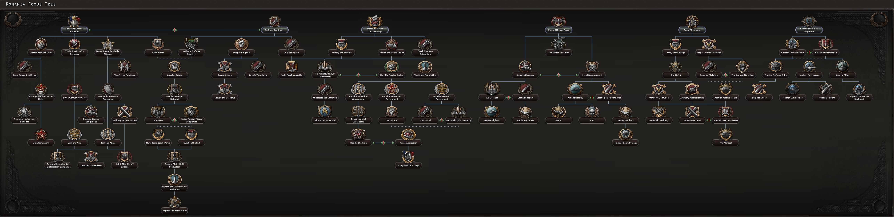
The Romanian national focus tree can be divided into 7 branches:
 罗马尼亚 开局拥有以下国家精神：
罗马尼亚 开局拥有以下国家精神：
 罗马尼亚开局拥有 3 个可用科研槽；另有 2 个可通过国策树解锁。
罗马尼亚开局拥有 3 个可用科研槽；另有 2 个可通过国策树解锁。
| 陆军科技 | 海军科技 | 空军科技 | 电子与工业 |
|---|---|---|---|
无
|
|
没有
|
「无」 |
| 陆军学说 | 海军学说 | 空军学说 |
|---|---|---|
|
「无」 |
「无」 |
「无」 |
| 陆军科技 | 海军科技 | 空军科技 | 电子与工业 |
|---|---|---|---|
无
|
|
没有
|
|
| 陆军学说 | 海军学说 | 空军学说 |
|---|---|---|
|
|
|
 罗马尼亚 为各种科技与装备设有一些独特名称，列于此处。请注意，通用名称不在此列。
罗马尼亚 为各种科技与装备设有一些独特名称，列于此处。请注意，通用名称不在此列。
| 类型 | 1918 | 1936 | 1939 | 1942 |
|---|---|---|---|---|
| 步兵装备 | Mannlicher M1893 | ZB vz.24 | Orita M1941 | Orita Carbine |
| 摩托化步兵 | AFB 3-ton |
| 科技年份 | 轻型（反坦克/自行火炮/防空） | 中型（反坦克/自行火炮/防空） | Modern | 重型（反坦克/自行火炮/防空） | Super-Heavy |
|---|---|---|---|---|---|
| 1918 | FT-17 | ||||
| 1934 | R-1 (VDC R35 / NA / NA) | Horea | |||
| 1936 | R-2 (TACAM R-1 / NA / NA) | ||||
| 1938 | T-39 (TACAM T-60 / 122mm M-03 / 4x20mm TA) | ||||
| 1940 | R-3 (TACAM R-2 / NA / NA) | Iancu | |||
| 1941 | T-41 (TACAM T-38 / NA / NA) | Maresal Mare | |||
| 1943 | R-43 | Maresal (NA / NA / Maresal 37mm TA) | |||
| 1945 | NA | ||||
| 备注：若无一步不退，中型坦克 I 与 II 将推迟一年解锁。 | |||||
| 科技年份 | 防空炮 | 火炮 | 反坦克炮 |
|---|---|---|---|
| 1934 | 7.5cm Mod. 1902/36 | ||
| 1936 | 2cm Mod. 38 | 47mm Schneider 36 | |
| 1939 | 10cm Mod. 1934 | ||
| 1940 | TA 3.7cm Mod. 39 | 75 mm Schneider 97/38 | |
| 1942 | 15cm Mod 1934 | ||
| 1943 | TA 7.5cm Mod. 39 | 75 mm Resita Model 1943 |
| 科技年份 | 近距空中支援 | 战斗机 | 海军轰炸机 | 重型战斗机 | 战术轰炸机 | 战略轰炸机 |
|---|---|---|---|---|---|---|
| 1933 | IAR 12 | IAR 25 | IAR 528 | |||
| 1936 | IAR 37 | IAR 14 | IAR 55 | IAR 214 | IAR 137 | IAR 679 |
| 1940 | IAR 81 | IAR 80 | IAR 114 | IAR 380 | IAR 633 | IAR 765 |
| 1944 | IAR 471 | IAR 109G | IAR 117 | IAR 410 | IAR 779 | IAR 979 |
 罗马尼亚 owns 12 states.
罗马尼亚 owns 12 states.
| 州 | 城市 | 地形（省份数） | 区域 | ||
|---|---|---|---|---|---|
| 巴纳特 | Timisoara | 3 | 乡村区 | 941,500 | |
| 比萨拉比亚 | Chisinău | 1 | 发达乡村区 | 2,296,800 | |
| 布科维纳 | Cernăuti | 1 | 乡村区 | 474,600 | |
| 克里沙纳 | Arad | 1 | 发达乡村区 | 632,900 | |
| 多布罗加 | Bazargic | 1 | 乡村区 | 378,000 | |
| 摩尔多瓦 | Galati Iasi |
1 1 |
乡村区 | 2,806,400 | |
| 蒙特尼亚 | Bucharest Ploiesti |
20 5 |
城市区 | 3,971,400 | |
| 北特兰西瓦尼亚 | Cluj Déda Oradea Târgu Mures |
5 1 0 2 |
发达乡村区 | 2,352,700 | |
| 北多布罗加 | Constanta | 3 | 城市区 | 490,000 | |
| 奥尔特尼亚 | Craiova | 1 | 乡村区 | 1,519,300 | |
| 南比萨拉比亚 | Cetatea Albă | 1 | 乡村区 | 566,600 | |
| 特兰西瓦尼亚 | Brasov | 1 | 发达乡村区 | 1,622,300 |
Romania starts with a democratic ruling party.
| 同上 | 政党名称 | 支持率 | 领袖 | Ruling | 国名 |
|---|---|---|---|---|---|
| Partidul National Liberal | 60.00% | 格奥尔基·塔塔雷斯库 | 罗马尼亚 | ||
| Partidul Comunist Roman | 2.00% | 康斯坦丁·扬·帕尔洪 | 罗马尼亚人民共和国 | ||
| 铁卫团 | 18.00% | 科尔内留·泽莱亚·科德里亚努 | 军团派罗马尼亚 | ||
| Frontul Renasterii Nationale | 20.00% | 阿尔曼德·克林内斯库 | 罗马尼亚王国 |
| 同上 | 政党名称 | 支持率 | 领袖 | Ruling | 国名 |
|---|---|---|---|---|---|
| Partidul National Liberal | 20.00% | 格奥尔基·塔塔雷斯库 | 罗马尼亚 | ||
| Partidul Comunist Roman | 2.00% | 康斯坦丁·扬·帕尔洪 | 罗马尼亚人民共和国 | ||
| 铁卫团 | 35.00% | 扬·安东内斯库 | 军团派罗马尼亚 | ||
| Frontul Renasterii Nationale | 43.00% | Armand Calinescu,⠀Carol II | 罗马尼亚王国 |
罗马尼亚 的可能国家领袖。
的可能国家领袖。
| 意识形态 | 肖像 | 名称 | 党派 | 特质 | 效果 | 可用 |
|---|---|---|---|---|---|---|
保守主义 |
格奥尔基·塔塔雷斯库 | 国家自由党（PNL） | ||||
自由主义 |
米哈伊一世 | 国家自由党（PNL） | can come to power via focus 米哈伊国王政变 | |||
列宁主义 |
康斯坦丁·扬·帕尔洪 | 罗马尼亚共产党（PCR） | can come to power via focus 强制退位 if | |||
法西斯主义 |
科尔内留·泽莱亚·科德里亚努 | 铁卫团 | ||||
法西斯主义 |
奥克塔维安·戈加 | 国家基督教党（PNC） | can come to power via focus 强制退位 if 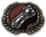 铁卫团 is complete | |||
法西斯主义 |
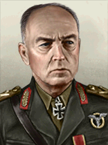 |
扬·安东内斯库 | 铁卫团 | can come to power via focus 强制退位 if | ||
中间主义 |
阿尔曼德·克林内斯库 | 民族复兴阵线（FRN） | ||||
Despotism |
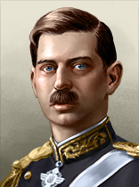 |
卡罗尔二世 | 民族复兴阵线（FRN） | Hedonist |
|
can come to power via focus 建立王室独裁 |
Despotism |
米哈伊一世 | 民族复兴阵线（FRN） | 可通过事件Michael I Supporters Demand Abdication上台 |
Romania guarantees the independence of  捷克斯洛伐克,
捷克斯洛伐克,  南斯拉夫,
南斯拉夫,  土耳其和
土耳其和 希腊 and is itself guaranteed by
希腊 and is itself guaranteed by  法国和
法国和 捷克斯洛伐克.
捷克斯洛伐克.
Romania starts without any allies and belonging to no faction. If  法国 creates the Little Entente, Romania is a potential member.
法国 creates the Little Entente, Romania is a potential member.
罗马尼亚 的部长与军事幕僚
的部长与军事幕僚
| 名称 | 特质 | 效果 | 花费（） |
|---|---|---|---|
| 阿尔曼德·克林内斯库 | 恐怖亲王 |
|
150 |
| Iuliu Maniu | 民主改革者 |
|
150 |
| Gheorghe Gheorghiu-Dej | 共产主义革命者 |
|
150 |
| Gheorghe Argeseanu | 沉默的实干家 |
|
150 |
| Nicolae Malaxa | 工业巨头 | 150 | |
| Petru Groza | 幕后暗算者 |
|
150 |
| Mihail Sturdza | 法西斯煽动家 |
|
150 |
| 名称 | 特质 | 效果 | 花费（） |
|---|---|---|---|
| 格奥尔基·波托佩亚努 | 军事理论家 |
|
100 |
| 埃马诺伊尔·约内斯库 | 空战理论家 |
|
100 |
| 名称 | 特质 | 效果 | 花费（） |
|---|---|---|---|
| Constantin Sanatescu | 陆军防御（专家） |
|
100 |
| 扬·安东内斯库 | 陆军进攻（专家） |
|
100 |
| 名称 | 特质 | 效果 | 花费（） |
|---|---|---|---|
| Nicolae Sova | 破交作战（专家） |
|
100 |
| Horia Macellariu | 海军机动（专家） |
|
100 |
| 名称 | 特质 | 效果 | 花费（） |
|---|---|---|---|
| Ermil Gheorghiu | 地面支援（专家） |
|
100 |
| Gheorghe Jienescu | 空军改革者（专家） | 100 |
| 名称 | 特质 | 效果 | 花费（） |
|---|---|---|---|
| Gheorghe Avramescu | 步兵（专家） |
|
100 |
| Gheorghe Mihail | 突击队（专家） |
|
100 |
| Paul Teodorescu | 战略轰炸（专家） |
|
100 |
| Gheorghe Vasiliu | 空降突击（专家） |
|
100 |
| 肖像 | 名称 | 特质 | 要求 | |||||
|---|---|---|---|---|---|---|---|---|
| 扬·安东内斯库 | 4 | 5 | 4 | 2 | 3 | 进攻学说 | – | |
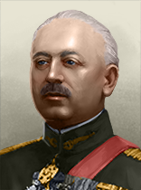 |
Petre Dumitrescu | 4 | 5 | 4 | 2 | 3 | 后勤奇才 进攻学说 |
– |
| 肖像 | 名称 | 特质 | 要求 | |||||
|---|---|---|---|---|---|---|---|---|
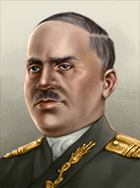 |
Barbu Paraianu | 2 | 1 | 1 | 3 | 2 | 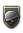 步兵军官 |
|
| Constantin Sanatescu | 3 | 3 | 2 | 3 | 2 | 步兵专家 | – | |
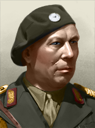 |
Gheorghe Avramescu | 3 | 3 | 2 | 2 | 3 | – | |
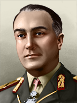 |
Ioan Mihail Racovita | 3 | 2 | 3 | 3 | 2 | 山地战士 | – |
| 肖像 | 名称 | MNV |
COR |
特质 | 要求 | |||
|---|---|---|---|---|---|---|---|---|
| Horia Macellariu | 2 | 2 | 2 | 2 | 1 | Gentlemanly Spotter |
– |
| 标志 | 名称 | 类型 | 效果 | 要求 | 花费（） |
DLC |
|---|---|---|---|---|---|---|
| ROMLOC | 工业财团 |
|
|
150 | ||

|
电子连 | 电子学财团 |
|
|
150 |
罗马尼亚 的设计公司。
的设计公司。
| 标志 | 名称 | 类型 | 效果 | 要求 | 花费（） |
DLC |
|---|---|---|---|---|---|---|

|
PZinż | 坦克设计商 |
选择此设计公司后，只要它仍在受雇，就会永久影响其受雇期间研究的所有装备的性能。 |
|
150 | |
| 列奥尼达工厂 | 坦克设计商 |
选择此设计公司后，只要它仍在受雇，就会永久影响其受雇期间研究的所有装备的性能。 |
|
50 |
| 标志 | 名称 | 类型 | 效果 | 要求 | 花费（） |
DLC |
|---|---|---|---|---|---|---|
| 康斯坦察船厂 | 舰船设计商 |
选择此设计公司后，只要它仍在受雇，就会永久影响其受雇期间研究的所有装备的性能。 |
|
150 | ||
| 加拉茨船厂 | 舰船设计商 |
选择此设计公司后，只要它仍在受雇，就会永久影响其受雇期间研究的所有装备的性能。 |
|
75 | ||
| 布勒伊拉船厂 | 舰船设计商 |
选择此设计公司后，只要它仍在受雇，就会永久影响其受雇期间研究的所有装备的性能。 |
|
75 |
| 标志 | 名称 | 类型 | 效果 | 要求 | 花费（） |
DLC |
|---|---|---|---|---|---|---|
| IAR | 飞机设计商 |
选择此设计公司后，只要它仍在受雇，就会永久影响其受雇期间研究的所有装备的性能。 |
|
50 | ||
| ICAR | 飞机设计商 |
选择此设计公司后，只要它仍在受雇，就会永久影响其受雇期间研究的所有装备的性能。 |
|
150 | ||
| SET | 飞机设计商 |
选择此设计公司后，只要它仍在受雇，就会永久影响其受雇期间研究的所有装备的性能。 |
|
150 |
| 标志 | 名称 | 类型 | 效果 | 要求 | 花费（） |
DLC |
|---|---|---|---|---|---|---|
| Vauxhall Romania | 摩托化装备设计商 |
|
|
75 | ||
| Atelierele Ford Bucuresti | 摩托化装备设计商 |
|
75 | |||
| MALAXA | 摩托化装备设计商 |
|
|
150 | ||
| Cugir Small Arms | 步兵装备设计商 |
|
|
150 | ||

|
Resita Works | 火炮设计商 |
|
|
150 | |
| Opel Abt. Rumänien | 摩托化装备设计商 |
|
|
75 |
 罗马尼亚 可使用这些军工产业组织。
罗马尼亚 可使用这些军工产业组织。
| ||||||||||||||||||||||||||||||||||||||||||||||||||||||||||||||||||||||||||||||||||||||||||||||||||||||||||||||||||||||||||||||||||||||||||||||||||||||||
| ||||||||||||||||||||||||||||||||||||||||||||||||||||||||||||||||||||||||||||||||||||||||||||||||||||||||||||||||||||||||||||||||||||||||||||||||||||||||||||||||||||||||||||||||||||||||||||||||||||||||||||||||||
| ||||||||||||||||||||||||||||||||||||||||||||||||||||||||||||||||||||||||||||||||||||||||||||||||||||||||||||||||||||||||||||||||||||||||||||||||||||||||||||||||||||||||||||||||||||||||||||||||||||||||||||||||||||||||||
| ||||||||||||||||||||||||||||||||||||||||||||||||||||||||||||||||||||||||||||||||||||||||||||||||||||||||||||||||||||||||||||||||||||||||||||||||||||||||||||||||||||||||||||||||||||||||||||||||||||||||||||||||||||||||||||||||||||||||||||||||||||||||||||||||||||||||||||||||||||||||||||||||||||||||||||||||||||||||||||||||||||||||||||||||||||||||||||||||||||||||||||||||||||||||||||||||||||||||||||||||||||||||||||||||||||||||||||||||
| 征兵法案 | 贸易法案 | 经济法令 |
|---|---|---|
|
|
|
*1936 年与 1939 年的法案相同。
年份 |
军用工厂 |
海军船坞 |
民用工厂 |
建筑槽位 |
|---|---|---|---|---|
| 1936 | 7 | 2 | 11 (-5) | 40 |
*红色 中的数字表示生产消费品所需的民用工厂数量，依据经济法案以及军用与民用工厂总数向上取整。
年份 |
石油 |
铝 |
橡胶 |
钨 |
钢铁 |
铬 |
煤 |
|---|---|---|---|---|---|---|---|
| 1936 | 77 (-38) | 7 (-3) | 0 | 0 | 4 (-2) | 0 | 7 (-3) |
*这些数字表示游戏开始一小时后可用的资源量。红色 中的数字表示因贸易法案而留作出口的资源量。
| 类型 | # 1936 | # 1939 | |
|---|---|---|---|
| 步兵 | 22 | 20 | |
| 山地兵 | 4 | 5 | |
| 骑兵 | 4 | ||
| 轻型坦克 | 1 | ||
| 师总数 | 31 | 30 | |
| 已用人力 | 251.80K | 243.70K | |
| 师 | 名称列表 | # 1936 | # 1939 | 支援连 | 战斗营 |
|---|---|---|---|---|---|
| 步兵师 | 22 | 19 | 9x | ||
| Brigada de Munte | 山地师 | 4 | 4 | 6x | |
| Brigada de Cavalerie* | 骑兵师 | 4 | 0 | 3x | |
| Brigada de Cavalerie^ | 骑兵师 | 0 | 4 | 2x 1x | |
| Regimentul de Blindate* | Armoured Divisions | 1 | 0 | 2x 2x | |
| Blindata Brigada^ | Armoured Divisions | 0 | 1 | 4x 2x | |
| 步兵师 | 0 | 1 | 7x | ||
| Vanatori de Munte^ | 山地师 | 0 | 1 | 9x | |
| * 标记的是在 1939 年开局中被移除的师。 ^ 标记仅存在于 1939 年开局中的师。 | |||||
| 类型 | # 1936 | # 1939 | |
|---|---|---|---|
| 驱逐舰 | 4 | ||
| 潜艇 | 0 | 1 | |
| 运输船队 | 10 | ||
| 舰船总数 | 4 | 5 | |
| 已用人力 | 1.00K | 1.20K | |
| 类型 | Class | Hull | 发动机 | # 1936 | # 1939 | 设计说明 | ||
|---|---|---|---|---|---|---|---|---|
| DD | Marasti* | 早期驱逐舰 | 轻型 I | 2 | 2 | Light Battery I, Anti-Air I, Fire Control 0, Torpedo Launcher I, Minelaying Rails | ||
| DD | Regele Ferdinand | 早期驱逐舰 | 轻型 I | 2 | 2 | 轻型火炮 I、防空炮 I、火控系统 0、鱼雷发射器 I、深水炸弹 I、布雷轨 | ||
| SS | Delfinul | 基础潜艇 | 潜艇 I | 1 | 1 | 鱼雷发射管 I、布雷管 | ||
| * 标记表示该变体「已过时」。 舰种术语：
| ||||||||
| 类型 | 1936 | 1939 | |||
|---|---|---|---|---|---|
| 战斗机 | 72 | 174 | |||
| 战术轰炸机 | 0 | 48 | |||
| 飞机总数 | 72 | 72 | 222 | 222 | |
| 已用人力 | 1.44K | 1.44K | 5.40K | 5.40K | |
| 类型 | 机体 | Role | 主武器 | 副武器 | 发动机 | 特殊模块 |
|---|---|---|---|---|---|---|
| IAR 14 | 战间期小型 | 战斗机 | 2x 轻机枪 | 1x 发动机 I | ||
| IAR 80 Requires IAR 80 |
改进型小型 | 战斗机 | 4x 轻机枪 | 2x 轻机枪 | 1x 发动机 II |
Both in real history and the game when controlled by AI, Romania ends up fighting in the war as  德国's eastern sidekick. But in this game, it is strong enough to be a world power in its own right, even without joining a faction. It is possible to go down this route as Non-Aligned, remaining a proper monarchy. Ideology is up to the player, and any pick will work with this guide, but it is assumed that the player will keep Romania non-aligned. Historical focuses are also assumed to be enabled.
德国's eastern sidekick. But in this game, it is strong enough to be a world power in its own right, even without joining a faction. It is possible to go down this route as Non-Aligned, remaining a proper monarchy. Ideology is up to the player, and any pick will work with this guide, but it is assumed that the player will keep Romania non-aligned. Historical focuses are also assumed to be enabled.
Given the lack of early industry and large fielded manpower requirements for many focuses, Romania will be fielding an almost exclusively infantry-based army for the first four years of the game. The beginning template of 9 infantry divisions should not be changed. All cavalry divisions on the field at the start should be converted to infantry. 20 new divisions must be queued up for training, and they should be given high equipment priority. The fielded divisions should be organized into two armies under an army group led by marshal Ion Antonescu. The whole army group should be placed at the Hungarian border and given an offensive line order. When it comes to doctrine, whatever the player chooses should be fine, but Superior Firepower would be the best choice for the early and mid-game and thus make the biggest difference. As concerns airpower, the two fighter squadrons should be combined into one. They will be used to support the coming invasions, but will not make much of an impact. The air force will be given proper attention later. When it comes to naval forces, Romania's starting fleet is laughable. Thankfully, naval power is not needed until much later - the fleet can stay safely in port at Constanta for the next 5-6 years, during which submarines and destroyers should be built for it with the available shipyards.
Romania has few civilian factories to start with, and they'll be busy covering for the king's expenses most of the time, but the Soviet border must be fortified well. To that end, infrastructure must first be built to the maximum in Bessarabia, Bucovina, and North Transylvania. Once that is done and the Fortify the Borders focus is complete, level 4 forts should be built all along the Soviet and Polish borders (more than that will dissuade the Soviets from attacking, which is not ideal). Anti-air emplacements should also be built in the Eastern and Northern Balkan regions, as Romania's air force will not be able to stand up to its Soviet counterpart when the war comes. Military factories should be focused on manufacturing infantry equipment mainly, with one factory each devoted to artillery and support equipment. Once the early conquests are almost finished, fighters should be built as well.
The antics of King Carol II will be a major headache for the player in this first phase and must be dealt with quickly, second in priority only to conquering the Balkans. Political power should be saved for better laws, advisors and eliminating opposition parties, so the player should take the industry hit every time the king is caught red-handed. However, the king does get a very useful trait with the second focus that allows choosing laws and advisors from the top and bottom rows with only 115 political power. The initial order of assigning laws and advisors should be:
Once these are assigned, the player should devote political power to increasing stability and war support and removing all traces of democracy, fascism, and communism from the country.
The first focus should be Institute Royal Dictatorship. This will put the king in charge and grant the player political power which should be used to pick the Industrial Concern. Following up, the next focus should be Revise the Constitution. Once that is finished, the king will have gotten his new trait and the player can change the conscription law. The Royal Foundation should be next, it will give the player another research slot. Balkans Dominance should then be picked, and it will open up the conquest/puppeting focuses. Whenever there is a choice, the player should go for annexation rather than puppets, as the nations in the region have relatively low manpower and their industry would be far more helpful if under direct Romanian control. Still, at least one puppet is necessary for proper defence against the Soviets.
By this point, the queued divisions should have been trained to a level where enough can be manually deployed to bring the fielded manpower up past 400K. The player should do so and then pick the Puppet Bulgaria focus. Almost always, the Bulgarians will give up their independence without a fight, but if they decide to fight, it should be easy to conquer them.
With the changes to how the Divide Yugoslavia focus works, that should be your next choice. Hungary should be the only nation that you invite when using the decision. At this point, it is wise to have saved up political power as you have to place claims on all provinces in  南斯拉夫. Focus your priorities on Serbia, Montenegro, and Macedonia as Hungary will likely focus on Croatia. Once all provinces have a single claim on them you can submit the ultimatum. If Yugoslavia is smart they will fold willingly and you gain full control of the areas you bid on, if not then the war should be easy enough and you can satellite the individual states or claim all territory depending on your preference. Hungary shouldn’t have enough score to claim too much of Yugoslavia but we can easily remedy that with the next focus.
南斯拉夫. Focus your priorities on Serbia, Montenegro, and Macedonia as Hungary will likely focus on Croatia. Once all provinces have a single claim on them you can submit the ultimatum. If Yugoslavia is smart they will fold willingly and you gain full control of the areas you bid on, if not then the war should be easy enough and you can satellite the individual states or claim all territory depending on your preference. Hungary shouldn’t have enough score to claim too much of Yugoslavia but we can easily remedy that with the next focus.
The next focus should be Align Hungary. The Hungarians are much more likely to put up a fight, and it is quite rare that they submit willingly. They might offer a "friendship treaty", but the player must deny it if it happens. Regardless, most of the time the player will need to invade  匈牙利 and annex them. You will also be able to regain any of the territory lost in the partitioning of Yugoslavia. Since it should only be early 1937 by this point, the Hungarian army will offer little resistance, even to the under-strength Romanian divisions. At this point, there will not be enough trained divisions to bring the fielded manpower up past 500K, so the next focus should be to Fortify the Borders. Also, fort construction should now begin.
匈牙利 and annex them. You will also be able to regain any of the territory lost in the partitioning of Yugoslavia. Since it should only be early 1937 by this point, the Hungarian army will offer little resistance, even to the under-strength Romanian divisions. At this point, there will not be enough trained divisions to bring the fielded manpower up past 500K, so the next focus should be to Fortify the Borders. Also, fort construction should now begin.
Now, the player should be able to deploy enough divisions to reach 500K fielded manpower, so the next focus should be Split Czechoslovakia. Hitler may or may not agree to the split, but he likely will. Once that is done,  斯洛伐克 will become a Romanian puppet and
斯洛伐克 will become a Romanian puppet and  德国 will annex Czechia. An unfortunate side effect is that
德国 will annex Czechia. An unfortunate side effect is that  德国 is thus strengthened one year early. Immediately afterwards, Secure Greece should be done, followed by an invasion and annexation of
德国 is thus strengthened one year early. Immediately afterwards, Secure Greece should be done, followed by an invasion and annexation of  希腊.
希腊.
There will not be enough manpower at this point to pick the  土耳其 focus, so the player should take the three Loyal Government focuses: His Majesty's Loyal Government, then Militarize the Sentinels, which will grant another 1% recruitable population, then All Parties Must End, which will put the king in his place and stop his negative events from firing again. National Defense Industry should be the last focus taken while waiting for the new troops to train. Once all of these are finished, enough troops should be deployable to bring the fielded manpower to 750K and pick the Secure the Bosphorus focus.
土耳其 focus, so the player should take the three Loyal Government focuses: His Majesty's Loyal Government, then Militarize the Sentinels, which will grant another 1% recruitable population, then All Parties Must End, which will put the king in his place and stop his negative events from firing again. National Defense Industry should be the last focus taken while waiting for the new troops to train. Once all of these are finished, enough troops should be deployable to bring the fielded manpower to 750K and pick the Secure the Bosphorus focus.
Invading  土耳其 in November 1938 should be trickier than any other nation thus far. A puppet-like 保加利亚 should be called into the war. One army should be placed on the Thracian border, while another army should be placed in the Aegean islands off the west coast of Anatolia. With luck, the army invading from Thrace can cross the Bosphorus and invade Anatolia before they are trapped in a bottleneck. The two armies can then meet and push to Ankara. With a sweep to the south-eastern victory points of Adana and Gaziantep,
土耳其 in November 1938 should be trickier than any other nation thus far. A puppet-like 保加利亚 should be called into the war. One army should be placed on the Thracian border, while another army should be placed in the Aegean islands off the west coast of Anatolia. With luck, the army invading from Thrace can cross the Bosphorus and invade Anatolia before they are trapped in a bottleneck. The two armies can then meet and push to Ankara. With a sweep to the south-eastern victory points of Adana and Gaziantep,  土耳其 will capitulate, and can be fully annexed. However, Romania should not take the two provinces bordering the Soviets, as an extra front might be too much for the army to handle. Instead, they should be given to a puppet-like 保加利亚. With the entire Balkans conquered, there will be no more manpower requirement on focuses, so the basic infantry division can now be edited to replace two infantry regiments with artillery ones. Also, support companies should be added while removing the existing support artillery company.
土耳其 will capitulate, and can be fully annexed. However, Romania should not take the two provinces bordering the Soviets, as an extra front might be too much for the army to handle. Instead, they should be given to a puppet-like 保加利亚. With the entire Balkans conquered, there will be no more manpower requirement on focuses, so the basic infantry division can now be edited to replace two infantry regiments with artillery ones. Also, support companies should be added while removing the existing support artillery company.
The final step in the first phase should be entering a war with the  苏联. This must be done as soon as possible as waiting too long might result in a German invasion of the USSR before Romania is ready to invade. To that end, the player should guarantee
苏联. This must be done as soon as possible as waiting too long might result in a German invasion of the USSR before Romania is ready to invade. To that end, the player should guarantee  芬兰 as soon as world tension exceeds 50%. This will allow Romania to enter a defensive war against the USSR sooner than normal as they will usually start the Winter War in 1939. A faction should be created with Finland so that they don't sign a negotiated peace.
芬兰 as soon as world tension exceeds 50%. This will allow Romania to enter a defensive war against the USSR sooner than normal as they will usually start the Winter War in 1939. A faction should be created with Finland so that they don't sign a negotiated peace.
By the time war with the  苏联 begins, Romania should have four armies. One army should be excluded from the army group and placed along the Anatolian coast, as the Soviets are not averse to naval invasions and the Romanian navy is no match for the Soviet Black Sea fleet. The other armies should be placed on the front-line in Moldova. 保加利亚 or whichever puppet was granted the eastern Anatolian provinces will place troops on that border, but no puppets should initially be called into the war. As the war begins, it might take a while for the enemy to begin mounting attacks, but they eventually will.
苏联 begins, Romania should have four armies. One army should be excluded from the army group and placed along the Anatolian coast, as the Soviets are not averse to naval invasions and the Romanian navy is no match for the Soviet Black Sea fleet. The other armies should be placed on the front-line in Moldova. 保加利亚 or whichever puppet was granted the eastern Anatolian provinces will place troops on that border, but no puppets should initially be called into the war. As the war begins, it might take a while for the enemy to begin mounting attacks, but they eventually will.  芬兰 will be forced to capitulate sooner or later, but that is no issue. The player will simply have to hold the line long enough for the Red Army to exhaust its reserves of manpower and equipment. The Soviets will heavily bomb the Romanian industry, but that cannot be prevented. The Romanian air force will have to defend the Eastern Balkans region to prevent the forts there from being destroyed. As the Soviets suffer casualties in the millions attacking the Romanian borders, the Romanian army should be no worse for wear. The player should also begin building armoured divisions once the infantry divisions are sufficiently up to strength. Those armoured divisions should consist of 6 medium armour brigades and 4 motorized (later mechanized) brigades.
芬兰 will be forced to capitulate sooner or later, but that is no issue. The player will simply have to hold the line long enough for the Red Army to exhaust its reserves of manpower and equipment. The Soviets will heavily bomb the Romanian industry, but that cannot be prevented. The Romanian air force will have to defend the Eastern Balkans region to prevent the forts there from being destroyed. As the Soviets suffer casualties in the millions attacking the Romanian borders, the Romanian army should be no worse for wear. The player should also begin building armoured divisions once the infantry divisions are sufficiently up to strength. Those armoured divisions should consist of 6 medium armour brigades and 4 motorized (later mechanized) brigades.
Once the Soviets have suffered about 2 million casualties, it will be time to mount an offensive. Waiting any longer would result in an early German invasion and relegate Romania to the role of a junior partner in the war. No doubt the Germans are already planning their offensive at this point, so the player will need to focus all efforts on a push North, to the Baltic sea (or states, if they're still independent). If it all goes well,  德国 will be cut off from Soviet lands, and they'll also be facing ~50 encircled Red Army divisions that they'll clean up for the player. At that point, it should be easy to push through the remaining Soviet troops and occupy the Russian heartlands.
德国 will be cut off from Soviet lands, and they'll also be facing ~50 encircled Red Army divisions that they'll clean up for the player. At that point, it should be easy to push through the remaining Soviet troops and occupy the Russian heartlands.  日本 will likely invade and take Vladivostok, forcing a Soviet capitulation. During the peace treaty, the player should first take all Soviet border and coastal provinces,
日本 will likely invade and take Vladivostok, forcing a Soviet capitulation. During the peace treaty, the player should first take all Soviet border and coastal provinces,  蒙古 (if possible), then anything else. That will stop
蒙古 (if possible), then anything else. That will stop  德国和
德国和 日本 from getting anything for themselves, and Romania will annex the entire USSR. Shortly after that, one of the best events in the game will fire.
日本 from getting anything for themselves, and Romania will annex the entire USSR. Shortly after that, one of the best events in the game will fire.
At this point, Romania will have become an industrial and military great power. The newly acquired lands will mostly lie in ruins, but with the vast Soviet industry under the player's control, and taking the Construction Repair continuous focus, the new factories can be quickly put to work.
In the very likely event that the Allies have done poorly,  德国 will have been sitting on an occupied Western/Central Europe for quite a long time, building up its army to a ridiculous size (~400 divisions). As the player's army by this point would only be around 200 divisions, Romania would have no hope of facing the Axis alone (
德国 will have been sitting on an occupied Western/Central Europe for quite a long time, building up its army to a ridiculous size (~400 divisions). As the player's army by this point would only be around 200 divisions, Romania would have no hope of facing the Axis alone ( 芬兰 wouldn't help much either), offensively or even defensively.
芬兰 wouldn't help much either), offensively or even defensively.  德国 alone would still have more manpower and industry than Romania, so waiting to build up a stronger army is out of the question. Invading small countries would bring Romania into a war with the Allies, so what is there to do?
德国 alone would still have more manpower and industry than Romania, so waiting to build up a stronger army is out of the question. Invading small countries would bring Romania into a war with the Allies, so what is there to do?
The answer lies east. As of Waking the Tiger,  日本 now forms its own faction rather than joining the Axis. They still have a focus wherein
日本 now forms its own faction rather than joining the Axis. They still have a focus wherein  日本,
日本,  德国和
德国和 意大利 all guarantee each other, but this doesn't apply to their puppets.
意大利 all guarantee each other, but this doesn't apply to their puppets.  日本 will have likely taken over
日本 will have likely taken over  中国 and started fighting the Allies, but their army will be equal or weaker to Romania's, so they make for a prime next target. The key to defeating
中国 and started fighting the Allies, but their army will be equal or weaker to Romania's, so they make for a prime next target. The key to defeating  日本 lies in occupying their Home Islands, which they do not defend nearly as well as they should. The player should start planning two naval invasions, each using a full army, one from Vladivostok and one from a newly built naval base a few provinces to the north, aiming towards Northern Honshu and Southern Hokkaido respectively (the second amphibious assault tech should be researched beforehand). The ramshackle Romanian Navy should be brought to Vladivostok as well. Every army not participating in the invasion should be preparing for an offensive against Japan's Chinese lands. Once everything is in place, war should be justified against
日本 lies in occupying their Home Islands, which they do not defend nearly as well as they should. The player should start planning two naval invasions, each using a full army, one from Vladivostok and one from a newly built naval base a few provinces to the north, aiming towards Northern Honshu and Southern Hokkaido respectively (the second amphibious assault tech should be researched beforehand). The ramshackle Romanian Navy should be brought to Vladivostok as well. Every army not participating in the invasion should be preparing for an offensive against Japan's Chinese lands. Once everything is in place, war should be justified against  满洲国.
满洲国.
When the war begins, the player should have the navy doing convoy escort on the Sea of  日本 and trigger the invasions. The IJN will likely intercept one of the invasions, but the other one will be able to land. With one army, it should be easy enough to push south to Nagasaki, and once that city is taken,
日本 and trigger the invasions. The IJN will likely intercept one of the invasions, but the other one will be able to land. With one army, it should be easy enough to push south to Nagasaki, and once that city is taken,  日本 will capitulate. During the peace treaty, the player should first annex
日本 will capitulate. During the peace treaty, the player should first annex  日本's puppets, as the Allies will prefer setting up democracies there to taking provinces directly. Then, the player should take
日本's puppets, as the Allies will prefer setting up democracies there to taking provinces directly. Then, the player should take  暹罗 (if they joined the war) and Indochina for their resources, after which Chinese lands should be prioritized.
暹罗 (if they joined the war) and Indochina for their resources, after which Chinese lands should be prioritized.
Once the war is over,  共产主义中国 can be released as a puppet, and work should immediately begin on building infrastructure in their lands to make them an integrated puppet. At that level, their colonial troops will use Chinese manpower exclusively. All templates that the player is currently using should be copied as Chinese colonial templates, and all deployed divisions turned into these templates. That will mean that Romanians no longer have to serve in the army, and the conscription laws can be brought down to limited conscription, removing any debuffs from those laws. Also, the Chinese will have around 40 million men ready for duty, so immediately, 150 Chinese infantry divisions should be queued for training.
共产主义中国 can be released as a puppet, and work should immediately begin on building infrastructure in their lands to make them an integrated puppet. At that level, their colonial troops will use Chinese manpower exclusively. All templates that the player is currently using should be copied as Chinese colonial templates, and all deployed divisions turned into these templates. That will mean that Romanians no longer have to serve in the army, and the conscription laws can be brought down to limited conscription, removing any debuffs from those laws. Also, the Chinese will have around 40 million men ready for duty, so immediately, 150 Chinese infantry divisions should be queued for training.
At this point,  德国和
德国和 意大利 will have both used their "Influence Romania" focuses, which will boost fascism significantly, even if it was previously banned. Unfortunately, these national spirits are permanent, even if
意大利 will have both used their "Influence Romania" focuses, which will boost fascism significantly, even if it was previously banned. Unfortunately, these national spirits are permanent, even if  意大利和
意大利和 德国 are destroyed. Unless the player wants to go fascist, the Democratic Crusader should be hired, or the Iron Guard will start a civil war when their support reaches 70%.
德国 are destroyed. Unless the player wants to go fascist, the Democratic Crusader should be hired, or the Iron Guard will start a civil war when their support reaches 70%.
Once the player has around 500 divisions in the field, and 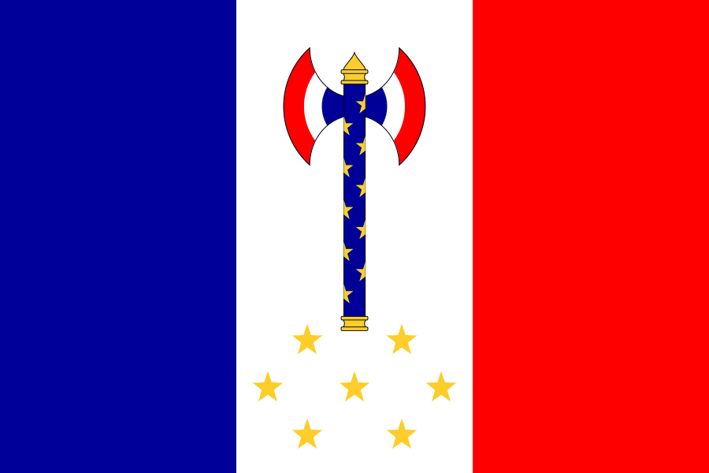 德国 has released Reichsprotekorates from its occupied countries, the time will have finally come to face the Axis, so war should be justified against
德国 has released Reichsprotekorates from its occupied countries, the time will have finally come to face the Axis, so war should be justified against  德国. Three full army groups should be placed on the German border. One army should defend the Syrian border (if Syria is held by
德国. Three full army groups should be placed on the German border. One army should defend the Syrian border (if Syria is held by
When the war begins, for the first few months the player should stay on the defensive. The relentless German attacks will cause them millions of casualties that they won't be able to recover and soon enough, most of their divisions will be under-strength. The three army groups on the German border should then go on the offensive, and  德国 will soon capitulate. Two of the army groups should then continue into 维希法国 while the other goes south to attack
德国 will soon capitulate. Two of the army groups should then continue into 维希法国 while the other goes south to attack  意大利. The armies fighting the Italians so far should also begin an offensive. Finally, 国民西班牙 will need to be invaded from France, and their capitulation will end the war.
意大利. The armies fighting the Italians so far should also begin an offensive. Finally, 国民西班牙 will need to be invaded from France, and their capitulation will end the war.
It might be possible to actually take lands from  法国 in the peace conference. If that is the case, the player should take all French colonial holdings before anything else. The Allies will likely set up some small democracies, but the player should have enough warscore to take the lion's share of provinces.
法国 in the peace conference. If that is the case, the player should take all French colonial holdings before anything else. The Allies will likely set up some small democracies, but the player should have enough warscore to take the lion's share of provinces.
Romania is now a superpower with hegemony over Afro-Eurasia, and with the three aggressive factions out of the picture, the player can rightfully claim victory. However, Romania will definitely be capable of full world conquest. With vast resources at their disposal, the player can now begin mechanizing their army and building a world-class fleet. Of the remaining countries, the  美国 will put up a stiff resistance, but with the overwhelming number of Chinese thralls under Romanian command, Romanian dominance is assured. Once every other country has been conquered,
美国 will put up a stiff resistance, but with the overwhelming number of Chinese thralls under Romanian command, Romanian dominance is assured. Once every other country has been conquered,  中国 can finally be annexed.
中国 can finally be annexed.
And so, Carol II becomes king of the world. Now, at last, he has an excuse for all his partying!
This strategy involves a focus on military size and conquering the balkan nations through "Balkan Dominance" path.
1. As soon as the game starts: train cavalry units, they are the cheapest units and for the "Balkan Dominance" path you need a large army.
2. When it comes to industry: build Civillian Factories until you have 15/15 on construction then switch to building Military Factories.
3. On research: your 1st reserach slot should always be a military doctrine, for this path Superior Firepower is recommended, then industrial and electronic researches.
4. On focus tree: Start with "Institute Royal Dicatorship" -> "Revise the Constitution" -> "The Royal Foundation" for that extra research slot.
5. Put all your military industry on guns. You don't want to waste military factories on support equipment, artillery or tanks yet.
6. Romania is going to be very offensive on this path, so Field Marshal Petre Dumitrescu and Generals Constantin Sanatescu & Gheorghe Avramescu are recommended.
You can now order the army you already have to train and unpause the game. Additionally, you can train the Air Force and the Navy as well.
7. Keep building your army. Your military factories should produce guns that allow you to train cavalry regiments.
8. On the focus tree, after "The Royal Foundation" go for "Balkans Dominance" and go down on the industrial branch all the way to "Hunedoara Steel Works" & "Invest in the IAR".
9. Between the exclusive focuses "MALAXA" and "Invite Foreign Motor Companies" pick "MALAXA".
10. As soon as you reach 500.000 field troops, invade Hungary. If Hungary refuses, the original 31 divisions should be more than a match for the Hungarians.
11. Afterwards, focus on Bulgaria. Bulgaria is a lot more likely than Hungary to submit and become a puppet.
12. Immediately after Bulgaria, go for "Divide Yugoslavia" and split Yugoslavia between yourself and your Hungarian puppet. Or Italy if Hungary resisted.
Now, it's time to play the game of splitting Yugoslavia, it requires a lot of political power so make sure you have plenty, in the meantime, increase the size of your army.
13. Whether it's Italy or Hungary, you will want to give them Vojvodina, Croatia, Slovenia, Dalmatia and Hertegovina while keeping the rest.
14. If you're dealing with Hungary, claim West Banat -> Belgrade -> Bosnia -> Montenegro -> Moravia -> Kosovo -> North Macedonia.
15. If you could get a better deal out of them such as Croatia or Dalmatia as well that would be great, but it depends on the AI's claims.
16. If you're dealing with Italy, claim -> Bosnia -> Montenegro -> Belgrade -> West Banat -> Moravia -> Kosovo -> North Macedonia.
17. Similar to Hungary, if you could get a better deal out of it depending on the AI's claims, go for it.
18. After you have at least 1 claim on every region, invite Germany and Italy as well, as soon as they join, send an ultimatum to Yugoslavia.
19. Since there are 4 powers against one, they are most likely to submit without a fight.
At this point, you already have Hungary, Bulgaria and most of Yugoslavia as well as a large army in production, things are going according to the plan.
20. While you play the Yugoslav game, keep building your army. Your military factories should produce guns that allow you to train cavalry regiments.
21. When you reach 750.000 field units, go for Split Czechoslovakia and improve relationship with Germany, hopefully it's before 1938 when they take it anyway.
22. On the focus tree, if you reached "Hunedoara Steel Works" & "Invest in the IAR" go for "His Majesty's Loyal Government" -> "Militarize the Sentinels" -> "All Parties Must End".
23. Alternatively or afterwards, you can take the focuses: "Army Maneuvers" -> "Army War College" -> "Royal Guard Divisions" -> "Reserve Divisions".
24. Now that you got everything you could have got without a fight, time to switch your army to a proper fighting force.
Right now, you should have a huge army as well as: Bulgaria, Yugoslavia, Hungary and Slovakia under your control. But why stop here? Since you can invade Greece and Turkey via focus tree, the Allies won't guarantee them, so you can actually with the "Battle for the Bosporus" as Romania, but you need to turn all those cavalry divisions into a fully fledged fighting force first.
25. If you haven't already make defensive infantry division templates with 10 infantry regiments and attack infantry division templates with 7 infantry and 2 artillery regiments.
26. For the moment you'll have to use the defensive infantry divisions on the offensive since you have a lot of guns and almost no support equipment or artillery.
27. On the production tab, move a lot of the production from guns to support equipment and artillery as well so you can catch up and be able to build better offensive divisions.
28. When you are ready, convert all your cavalry to defensive infantry divisions of 10 infantry regiments and go for "Secure Greece" focus.
29. As soon as you beat Greece, annex them and go for "Secure the Bosporus" focus, Turkey will be stronger than Greece but not a match for you, make use of naval invasions.
Now that you got everything that you could get with "Balkan Dominance" the King Carol II became King of the Balkans. If you want to conquer the whole world, the next steps from here are simple:
30. Join the Axis and invade the USSR, you will have 2 frontlines: one in Bessarabia and another in Turkey, make sure you cut Germany territorial progress to gain occupation.
31. After you defeat USSR and take most of the land, take some time to pacify the region, then leave the Axis and declare war on Germany to take the other half of Europe.
32. Since you are non-aligned and there's over 50% world tension, you are free to declare war on the United Kingdom or the United States, even on Japan and China.
Use this quick guide (current version calibrated for 唯有鲜血) if you want to min-max your way into (socialism RL, ingame) communism (historical focuses on) as fast as possible and then liberating the world without joining the  苏联 in Comintern.
苏联 in Comintern.
(This is work in progress but it will give you a strong start while also role-playing how perhaps a true communist/leftist Romanian government would have reacted in that historical time frame given a certain context)
Though HOI4 does not allow Romania to go anarchist (anarcho-communist), the aim of this guide is to provide with the closest window on what could a anarchist (or rather a independent 共产主义) approach would entail.
Disclaimer: Do not spend your 政治点数 for other random 决议 except the ones below otherwise or you will delay the 政府 change.
Focus Tree based:
1) 建立王室独裁
You should also do the usual starting actions, pick techs, arrange army, ideally strip them of weapons and start training to regular a select few that will go as volunteers in  西班牙和
西班牙和 中国 - also start training filler troops - 3 Cavalry template - and give them weapons gradually then deploy them at 20%, as you need to save weapons; also consider disbanding the tank division - not the template.
中国 - also start training filler troops - 3 Cavalry template - and give them weapons gradually then deploy them at 20%, as you need to save weapons; also consider disbanding the tank division - not the template.
2) 修订宪法
3) Flexible Foreign Policy
You can now also pick 2 useful laws like 有限征兵和自由贸易 (but not more then 2 as you'll need the PP later). The Spanish civil-war will start during this focus, but you will probably won't be able to get involved until 1 year later.
4) Appoint Pro-Soviet Government
This gives you a huge 35% increase in Communist popularity, unlocks Gheorghe Gheorghiu Dej as an advisor and related decisions that will lead to referendum; make sure you pick him straight away as an advisor and also pick "Open Political Discourse" if you have enough Political Power.
5) 巴尔干霸权
Though becoming communist early is important (also for your ability to send volunteers to the Spanish civil war), you should not delay the Balkan liberation, so go ahead and pick this.
There are some free events that give boosts to PCR popularity so you could go ahead with the focus tree without waiting to gather for "Discredit government", though this might still be needed at least once (costs 50 Political Power points) and then another 100 Political Power points to "Hold Referendum" once PCR is above 50%.
6) 保加利亚 傀儡国
After you start this focus, at some point PCR with Parhon will have ascended into power. Do NOT sign a pact with  苏联 yet, save it for later to cosy up to them to temporarily join their faction to avoid the conflict for Bessarabia.
苏联 yet, save it for later to cosy up to them to temporarily join their faction to avoid the conflict for Bessarabia.
You should have enough troops to scare 保加利亚 into quick submission. Also, once you have gone communist, you can send away your troops to Spain to make some super troopers but also for role-playing reasons (suffering 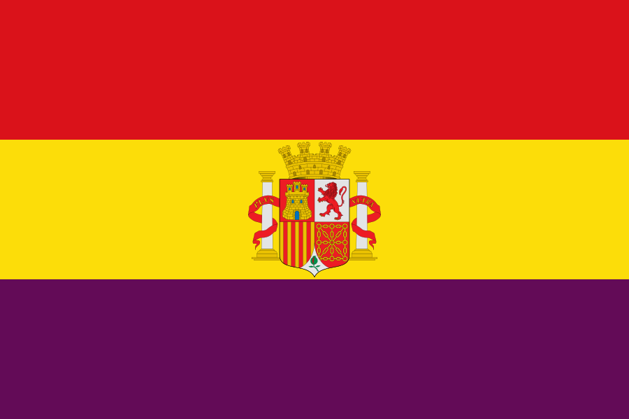
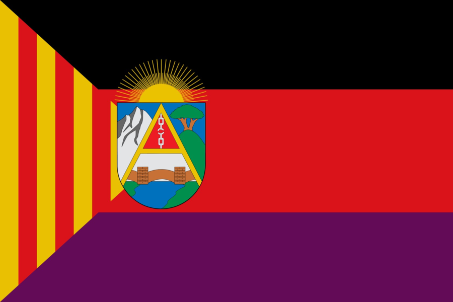
无政府主义西班牙 comrades that the7) Army Maneuvers
The key to winning against all major powers is not blunt force but instead carefully (micro-)managing your front lines and more importantly your templates (DO NOT delete or edit your existing templates unless you are absolutely sure that you will not need them, always keep clear names for them - for e.g. 9INF+ENG - 9 infantry and a engineer support company). This is why this focus is needed, though war experience against 国民西班牙 will also help (however this will enable you even more manpower later).
8) Divide  南斯拉夫
南斯拉夫
You need to continue working the Balkans. This will most likely drain your Political Power quite a lot, so prepare for a fairly long journey. The key is to invite  匈牙利 (which you will not long after conquer/puppet) but only invite
匈牙利 (which you will not long after conquer/puppet) but only invite  意大利 in the end (
意大利 in the end ( 德国 is not an option) so they won't get anything.
德国 is not an option) so they won't get anything.
The mini game has been explained in other guides, but long story short, you can get provinces with just one claim, and it is rather advantageous to let  匈牙利 take as much provinces as possible as you will get it back from them anyway (they generally get West Banat, Vojvodina, Croatia, Bosnia and even Serbia though their interest can vary from game to game even in historical mode).
匈牙利 take as much provinces as possible as you will get it back from them anyway (they generally get West Banat, Vojvodina, Croatia, Bosnia and even Serbia though their interest can vary from game to game even in historical mode).
Try to leave a buffer with Germany / Italy by creating the  斯洛文尼亚共和国 if you want.
斯洛文尼亚共和国 if you want.
Sadly,  匈牙利 almost all the time takes all the equipment that
匈牙利 almost all the time takes all the equipment that  南斯拉夫 has, but don't worry, you will (weirdly) get them back from them later.
南斯拉夫 has, but don't worry, you will (weirdly) get them back from them later.
9) Royal Guards
You might not have enough troops for the later focuses yet or simply need to get to Reserve Divisions, which is perhaps the true prize. Either way, a fully equipped Veteran division definitely will not hinder you. Note that it takes time to train or even raise the manpower so even if you go full on Align  匈牙利 first you might have issues with having enough manpower for the Greece, Czechoslovakia or Turkey focuses.
匈牙利 first you might have issues with having enough manpower for the Greece, Czechoslovakia or Turkey focuses.
10) Reserve Divisions
This simply gives you manpower, which is very precious early game, and will help you achieve the tree focuses and overall, as Romania has limited manpower in comparison to majors.
11) Align  匈牙利
匈牙利
In the latest game iterations, they will fight you, but if you carefully deploy your troops all along their enlarged border, you can easily swoop in and take Budapest (and other smaller cities if needed). You can choose to puppet them or just puppet a part of them (Transdanubia) to act as a buffer against the Axis.
If you think you can handle it, you can accept the Bled agreement, so they raise their recruitable population and industry, which will make them a better puppet but slightly harder to overcome in the war. Either way, you should beat them easily.
As this will be your first true war, make sure that you dry all the other communist countries of any useful equipment during the war via lend lease:  苏联 ,
苏联 ,  蒙古,
蒙古,  巴拉圭, or even
巴拉圭, or even  新疆和
新疆和 唐努乌梁海 (though Paraguay equipment will not arrive until you secure Turkey). These will come in handy (even the basic infantry equipment) for occupied territories. To get all possible ones, just make fake templates that will only need specific equipment that you want to create a fake shortage of. You can also ask for some equipment from your 保加利亚 puppet. Be mindful that unless you stretch your war for more then 30 days, you will not get more then one lend lease transport (if the promised equipment is to be received gradually).
唐努乌梁海 (though Paraguay equipment will not arrive until you secure Turkey). These will come in handy (even the basic infantry equipment) for occupied territories. To get all possible ones, just make fake templates that will only need specific equipment that you want to create a fake shortage of. You can also ask for some equipment from your 保加利亚 puppet. Be mindful that unless you stretch your war for more then 30 days, you will not get more then one lend lease transport (if the promised equipment is to be received gradually).
Funny enough, you also get the Yugoslav equipment when capitulating  匈牙利.
匈牙利.
Make sure to call Bulgaria as a co-belligerent so that they lose the bad modifiers due to army restrictions.
12) 拆分 捷克斯洛伐克
捷克斯洛伐克
They have great equipment stockpiles and if you don't take them, they will get swallowed by  德国 exposing your front-line through yet another direction.
德国 exposing your front-line through yet another direction.
This point could also take you to a crossroad moment:
If Hitler agrees with you, you could safely go forward with completing the whole Balkan Dominance branch. If not, you will have to decide if you attack Czechoslovakia or instead go for Turkey as both might not be possible due to world tension.
First (A) route
If war it is, you will need to justify first, which might take a while, even if less than the normal justifications. You will simply need to do away fast with Greece and then return fast and avoid as much as possible the Sudetenland forts. This might be still be impossible because UK might guarantee them anyway.
The Second (B) route
13A and B) Secure Greece
(To be continued and re-optimized for latest AaT DLC)
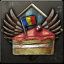 死亡、耻辱或蛋糕（Death or Dishonor or Cake） 作为罗马尼亚，拥有你开局所有邻国各一块领土。 |
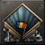 既非死亡亦非耻辱（Neither Death nor Dishonor） 作为罗马尼亚，带着开局时的所有州撑到 1942 年，并控制莫斯科或柏林。 |
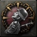 完全不行，罗马尼亚 作为罗马尼亚，在战争中改变阵营并使一个前盟友投降。
模板：Country navbox/Americas 模板：Country navbox/Asia 模板：Country navbox/Africa 模板：Country navbox/Special |